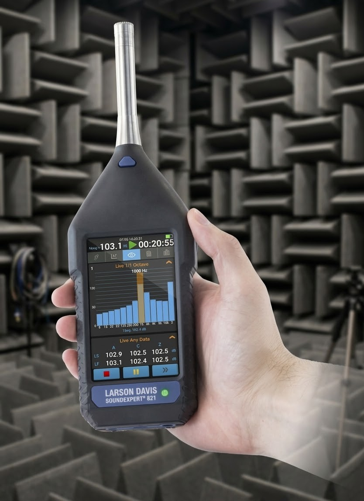
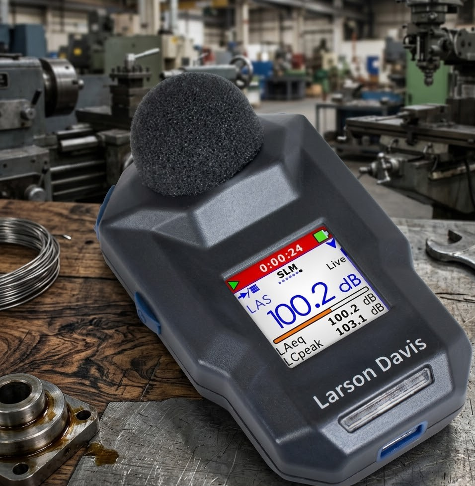
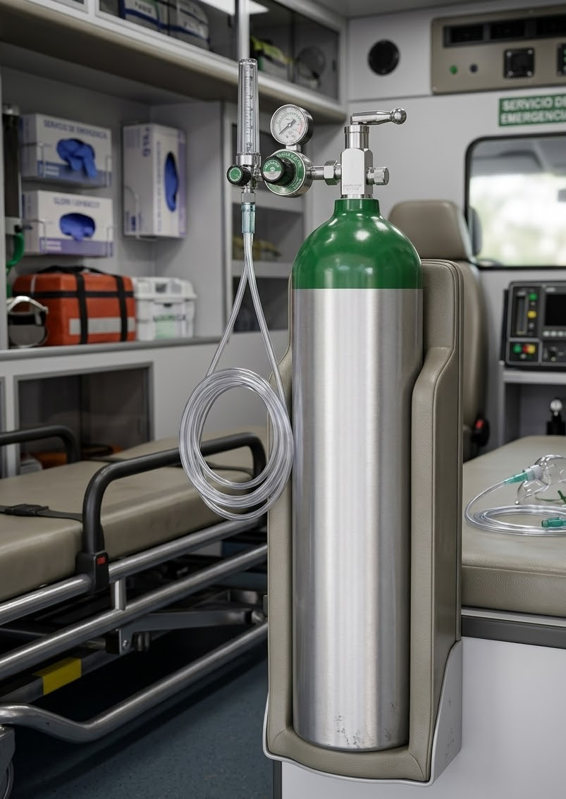
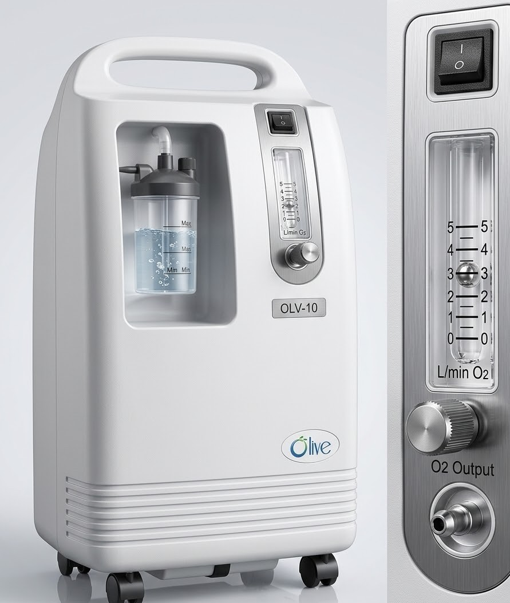

Equipamiento de última generación para Higiene Industrial y Salud Ocupacional.
Instrumentación certificada para la medición precisa de agentes físicos y protección auditiva.

Equipos clase 1 y 2 para medición de ruido ambiental y laboral. Cumplimiento con normativa nacional.

Tecnología inalámbrica de última generación para la medición de dosis de ruido personal.
Soluciones de oxigenoterapia y equipamiento médico para emergencias y cuidados críticos.

Cilindro de Acero 10m³
Cilindro de alta presión con certificación internacional. Seguridad garantizada.
Ver ficha técnica
Modelo OLV-10
Suministro continuo de oxígeno de alta pureza. Operación silenciosa y eficiente.
Ver ficha técnica